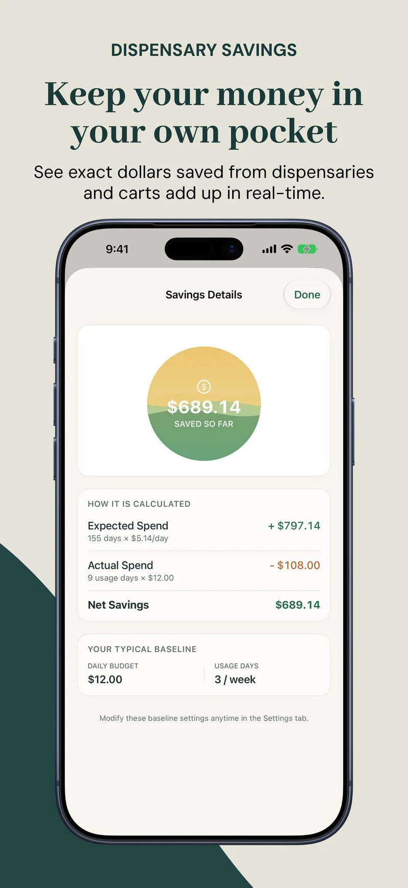

Quitting THC Carts vs. Flower: Withdrawal Timeline, Symptoms & Recovery Guide
If you have ever stopped smoking traditional flower and later tried quitting high-potency 510-thread vape cartridges, you may have noticed a clear difference: quitting THC carts often feels much sharper.
Many people are caught off guard by how strong concentrate withdrawal can feel, wondering why they experience nausea, chills, night sweats, and heightened anxiety that never bothered them as much when stopping joints or bowls. The difference comes down to potency, dosing frequency, and how easy vape pens are to use all day.
| Dimension | THC Vape Carts & Concentrates (80%–90% THC) | Traditional Cannabis Flower (15%–25% THC) | Why It Matters |
|---|---|---|---|
| THC Concentration | High-potency distillate or live resin (800–900 mg THC per gram) | Cured plant matter (150–250 mg THC per gram) | Much larger THC dose per inhalation |
| Terpenes & Minor Cannabinoids | Often re-added botanical terpenes; minimal minor cannabinoids | Natural mix of CBD, minor cannabinoids, and full-spectrum terpenes | Different cannabinoid and terpene profile |
| Friction & Frequency | Pocketable and low-odor; easy to hit every 15–30 minutes indoors | Higher friction: grinding, rolling, odor, and going outside | Frequent micro-dosing raises total daily THC intake |
| Withdrawal Onset & Peak | Often starts within the first day or two and peaks during week 1 | Often builds more gradually over the first few days | Faster drop from frequent high-dose THC use |
| Physical Symptoms | Often stronger morning nausea, appetite loss, chills, and night sweats | Often milder appetite drop, restlessness, and sleep trouble | Withdrawal adjustment as the body adapts without THC (Budney et al., 2004) |
| Mood & Sleep Adjustment | Sleep and mood may take several weeks to settle | Often settles over 2 to 4 weeks for many people | Gradual adjustment as CB1 receptors recover (Hirvonen et al., 2012) |
Why High-Potency THC Carts Often Hit Harder
The difference between flower and concentrates is not only strength, it is also how people consume them. Traditional cannabis flower typically contains around 15% to 25% THC alongside other cannabinoids and plant terpenes. The physical routine of grinding, packing, lighting, and dealing with smoke odor creates natural pauses between sessions.
By contrast, modern vape carts can pack up to 900 milligrams of THC per gram. With the press of a button, users inhale concentrated vapor with almost no lingering smell. That convenience encourages "stealth vaping" at desks, in cars, and in bed, keeping THC levels elevated throughout waking hours.
PET imaging by Hirvonen et al. (2012) found that chronic daily cannabis users had lower CB1 receptor density across cortical brain regions compared with non-users. When heavy, frequent THC intake stops abruptly, your nervous system needs time to readjust, which can trigger uncomfortable withdrawal symptoms (Budney et al., 2004).
Concentrate vs. Flower Withdrawal Timeline
Everyone's metabolism and usage history differ, so timelines vary, though heavy concentrate use often follows a brisker version of the general cannabis withdrawal timeline:
Days 1–3: Early Physical Symptoms
Compared with flower, stopping daily cart use often brings sharper early discomfort during the first few days. Common symptoms include:
- Nausea & Appetite Loss: Appetite changes and stomach discomfort are recognized cannabis withdrawal symptoms (Budney et al., 2004). When solid food feels unappealing for a day or two, smoothies, broth, and electrolyte drinks can help.
- Chills & Night Sweats: Many people experience chills or sweating at night during the first week. See our night sweats and insomnia relief guide for practical ways to stay comfortable.
- Restlessness & Anxiety: Irritability, anxiety, and restlessness are common after stopping heavy use (Budney et al., 2004). If you ever have severe symptoms like chest pain, fainting, or vomiting you cannot keep fluids down, talk to a doctor right away.
Days 4–7: Sleep Disruption & Vivid Dreams
Sleep problems are common in the first nights after stopping heavy cannabis use. In a sleep study by Bolla et al. (2008), heavy users had shorter total sleep time, less slow-wave sleep, worse sleep efficiency, and longer time to fall asleep than controls. Many people also notice vivid dreams (REM rebound) along with irritability or mood swings during the first week.
Days 8–14: Appetite & Focus Often Improve
By the end of the second week, natural appetite usually returns, morning grogginess often lifts, and daytime focus begins improving for many people.
Weeks 3–4: CB1 Receptor Recovery
PET imaging by Hirvonen et al. (2012) found that cortical CB1 receptor density in daily smokers returned to normal levels after about 4 weeks of monitored abstinence, a timeframe also noted in a review by Bonnet & Preuss (2017). Whether you are quitting for good or taking a 30-day tolerance break, reaching Week 4 is a major milestone.
Built into Quit Weed: Unfog
Ditch high-potency THC carts & calculate dispensary savings
Track every skipped vape cart, dab, and eighth and follow general recovery milestones based on your cannabis-free days. All data stays private on your device.
Calculate Dispensary Savings Free on iOS →
Should You Taper with Flower Before Quitting Carts?
Many daily cart users ask whether stepping down to lower-THC flower makes quitting easier. The best choice depends on your habits:
- The Step-Down Taper: Switching from high-potency carts to lower-THC flower for 7 to 10 days brings natural friction back into your routine. It breaks the habit of constant indoor puffing and can soften early physical discomfort for some people.
- The Cold Turkey Trade-Off: Tapering takes discipline, and some people simply smoke more flower to chase the same dose. Stopping cold turkey concentrates the hardest part into the first several days rather than stretching out the transition.
3 Practical Tactics for Quitting THC Carts
- Liquid Nutrition & Ginger: If nausea makes solid meals tough during the first few days, sip protein shakes, bone broth, or ginger tea to stay hydrated and nourished.
- 4-7-8 Paced Breathing: When restlessness or anxious feelings hit, inhale for 4 seconds, hold for 7 seconds, and exhale slowly with pursed lips for 8 seconds. A few slow cycles can help you calm down and let the wave pass.
- Track Dispensary Savings: At $40 to $70 per 1-gram cartridge, heavy cart habits often cost $200 to $400 every month. Watching your cumulative savings grow gives you a concrete, motivating win while cravings fade.
Sources
- Hirvonen J et al., "Reversible and regionally selective downregulation of brain cannabinoid CB1 receptors in chronic daily cannabis smokers," Mol Psychiatry, 2012 (PubMed)
- Bonnet U, Preuss UW, "The cannabis withdrawal syndrome: current insights," Subst Abuse Rehabil, 2017 (PubMed)
- Budney AJ et al., "Review of the validity and significance of cannabis withdrawal syndrome," Am J Psychiatry, 2004 (PubMed)
- Bolla KI et al., "Sleep disturbance in heavy marijuana users," Sleep, 2008 (PubMed)
Frequently Asked Questions
Why is quitting THC carts so much harder than flower?
THC vape cartridges often contain 80% to 90% THC compared to 15% to 25% in flower, and they are easy to use discreetly all day. That combination leads to higher total THC intake and tolerance, which can make withdrawal symptoms like nausea, sweating, irritability, and poor sleep feel sharper (<a href="https://pubmed.ncbi.nlm.nih.gov/15514394/" target="_blank" rel="noopener">Budney et al., 2004</a>).
How long does THC vape cart withdrawal last?
For many people, physical withdrawal symptoms such as nausea, sweating, and chills are strongest during the first week and ease over 1 to 2 weeks (<a href="https://pubmed.ncbi.nlm.nih.gov/15514394/" target="_blank" rel="noopener">Budney et al., 2004</a>). Sleep quality, mood, and cravings often continue settling over 2 to 4 weeks.
Should I switch to flower before quitting vape carts entirely?
Switching to lower-potency flower for 7 to 10 days can work as a step-down taper for some people. It brings friction back to your routine, curbs constant indoor vaping, and may soften initial withdrawal discomfort.
When do CB1 receptors recover after quitting high-potency concentrates?
A review by <a href="https://pubmed.ncbi.nlm.nih.gov/28490916/" target="_blank" rel="noopener">Bonnet & Preuss (2017)</a> notes that CB1 receptors start to recover within days of stopping cannabis, and PET imaging by <a href="https://pubmed.ncbi.nlm.nih.gov/21747398/" target="_blank" rel="noopener">Hirvonen et al. (2012)</a> found that cortical CB1 density returned to normal after about 4 weeks of abstinence.